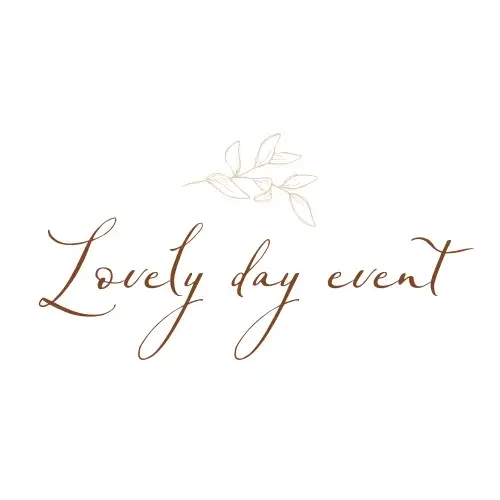
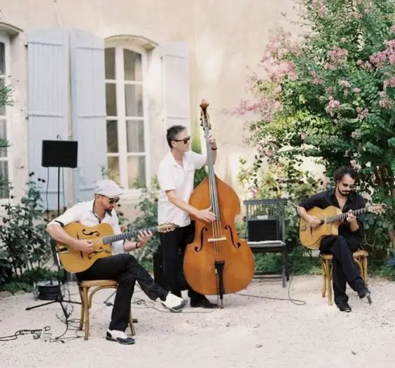

A wedding is a significant, festive event where friends and family gather to celebrate the union of two loved ones. Among the key players of this exceptional day, the witnesses play a vital role. They aren't just there to support the couple and sign the official documents, but also to liven up the party and make sure everyone has an unforgettable time. Witnesses' entertainment at weddings has become a tradition that adds a personal and often hilarious touch to the celebration.
What kinds of entertainment do witnesses offer?
First of all, there are speeches and toasts, essential elements of wedding entertainment. They let the witnesses share anecdotes, memories and wishes for the couple.
Moving speeches
Moving speeches are often full of personal memories and moments shared with the couple. They may recall touching childhood anecdotes, adventures lived together or meaningful moments in the relationship between the couple and the witnesses. These speeches create an atmosphere of tenderness and closeness that touches the hearts of every guest.


Humorous speeches
By contrast, humorous speeches aim to lighten the mood and make the audience laugh. They can include jokes, impressions or embarrassing but affectionate stories. The aim is to show off the couple's personality in a playful, fun way, while remaining respectful and affectionate.
Games and activities are also very common at weddings. Organised by the witnesses, they are another popular form of entertainment. They let guests take an active part and create memorable moments.

Getting-to-know-you games
Getting-to-know-you games, such as the "Couple Quiz" or the "12 Months Game", are designed to test guests' knowledge of the couple. These games are interactive and often involve prizes or forfeits to add a touch of competition and fun.
Coordination games
Coordination games, such as sack races or relays, are perfect for getting guests on their feet and taking part physically. These games encourage camaraderie and laughter, while breaking the ice between guests who don't necessarily know each other.
Of course, sketches and theatrical scenes are also a must. They let the witnesses act out moments from the couple's life or imaginary situations, often with a humorous touch.
Re-enacting memories
Re-enactments are mini plays in which the witnesses replay memorable moments in the couple's life. These can range from their first meeting to memorable holidays, as well as funny or embarrassing events. These sketches are often hilarious and help guests get to know the couple better.

Parodies and impressions
Parodies and impressions are also very popular. The witnesses can imitate the couple, their habits or their signature expressions, often exaggerated for comic effect. This kind of entertainment is usually much appreciated because it shows the closeness between the witnesses and the couple.
Artistic performances can be fun too. Some entertainment takes the form of artistic performances, such as songs, dances or magic acts.
Personalised songs
Personalised songs are a creative, emotional way to celebrate the couple. The witnesses can write lyrics to a well-known tune or compose an original song about the couple and their story. These performances are often very touching and stay etched in the couple's memory.

Surprise dances
Surprise dances are choreographies prepared by the witnesses and performed during the reception. They can include a variety of styles, from classical to modern dance, and are often performed with humour and enthusiasm. These routines are a dynamic way to involve the guests and liven up the evening.

One form of entertainment I highly recommend is videos and photo montages.
Photo montages
Photo montages are a nostalgic and often emotional way of retracing the couple's story. The witnesses can compile photos from different moments of their lives, from childhood to the day they met and their life together. These montages are often accompanied by music and commentary that add a personal, touching dimension.

Surprise videos
Surprise videos can include interviews with loved ones, congratulations messages from those who can't be there, or humorous clips featuring the couple. These videos are shown during the reception and bring a touch of modernity and emotion to the celebration.
For example, at one of my weddings, the witnesses made a funny video with all the guests. You can watch it below.

Why is it important for witnesses to provide entertainment?
It strengthens the bond!
Creating shared memories
The entertainment offered by the witnesses creates shared memories between the couple and their loved ones. These moments of laughter and emotion strengthen bonds and create an atmosphere of closeness that will last long beyond the wedding day.


Expressing friendship
By preparing and performing entertainment, the witnesses express their friendship and support for the couple. These gestures show the importance of their relationship and the affection they have for the newlyweds.
And of course, you have to add a personal touch!
Personalising the entertainment
The entertainment designed by the witnesses is often highly personalised, based on specific anecdotes and memories. This personalisation makes each wedding unique and truly reflects the couple's personality.
Adapting to the couple's preferences
The witnesses know the couple's tastes and preferences well, which lets them create entertainment that will be particularly appreciated. Whether through the choice of music, the type of games or the tone of the speeches, the witnesses make sure the entertainment perfectly matches the couple's expectations.

Entertainment also makes it easier for guests to interact.
Breaking the ice
Entertainment helps break the ice between guests who don't know each other. By taking part in games or laughing together during the speeches, guests begin to feel more at ease and interact more freely.

Creating a convivial atmosphere
By livening up the evening, the witnesses help create a convivial, warm atmosphere. Their role is crucial to make sure everyone has a good time and the atmosphere stays positive throughout the celebration.
How do witnesses prepare their entertainment?
Sharing out the tasks
For the entertainment to be a success, good planning and coordination are needed. The witnesses must share out the tasks and make sure each piece is carefully prepared. This can include writing speeches, preparing games or rehearsing sketches.
Time management
Time management is essential so that the entertainment fits seamlessly into the running order of the day. The witnesses must make sure each activity lasts an appropriate time and doesn't encroach on other important moments of the day.
Creativity and originality
Inspiration
The witnesses can draw inspiration from many sources: films, TV series, songs, past events and so on. The important thing is to find ideas that are both original and suited to the couple.
Innovation
Innovation is key to surprising and entertaining guests. The witnesses can introduce unexpected elements or modern technology to make their entertainment even more memorable.
Involving the guests
Engaging the participants
For the entertainment to succeed, it is important to involve the guests. The witnesses can ask for volunteers to take part in games or sketches, or ask guests to prepare small surprises for the couple.
Collaboration
Collaborating with other family members or close friends can also enrich the entertainment. By working together, they can create even more special, memorable moments for the couple.
In short, witnesses' entertainment plays a crucial role in the success of this unique event. It adds a personal touch, strengthens the bond between the couple and their loved ones, and brings fun and conviviality to the celebration. Through their speeches, games, sketches and artistic performances, the witnesses create unforgettable memories and help make the day truly magical. By carefully planning their contributions, showing creativity and involving the guests, witnesses can ensure the wedding is a memorable, joyful celebration of love and friendship that feels authentic and touching. Their efforts and dedication show how much they care about the couple, adding an extra layer of affection and sincerity to an already special day.